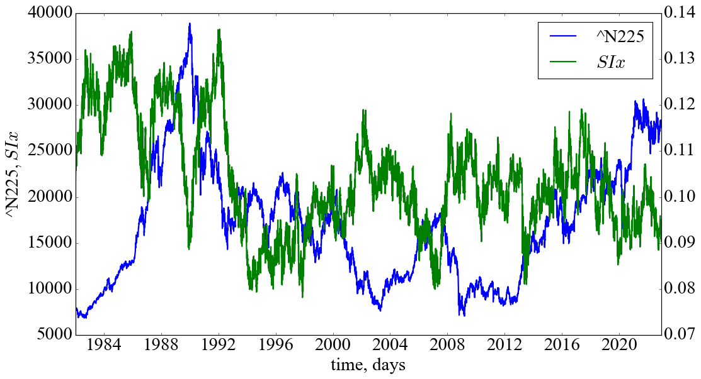

!pip install ordpyCollecting ordpy
Downloading ordpy-1.1.3-py3-none-any.whl.metadata (11 kB)
Downloading ordpy-1.1.3-py3-none-any.whl (24 kB)
Installing collected packages: ordpy
Successfully installed ordpy-1.1.3Тема. Аналіз незворотності часового ряду
Мета. Навчитись розраховувати значення індексів незворотності часу для складних сигналів та досліджувати їх динаміку у випадку незворотних змін, побудови передвісників критичних і кризових явищ
Складні системи — це відкриті системи, які обмінюються енергією, речовиною та інформацією з навколишнім середовищем. Досліджуючи складні системи в природничих науках, Пригожин [1] зробив фундаментальне узагальнення, вказавши на необхідність розгляду явищ незворотності та нерівноважності, які є фундаментальними властивостями складних систем різної природи: соціальні, економічні, біомедичні тощо [2]. Пригожин вважав, що найважливіші зміни в сучасній науковій революції пов’язані зі зняттям попередніх обмежень у науковому розумінні часу. Нелінійний світ характеризується рисами темпоральності, тобто незворотністю і швидкоплинністю процесів і явищ. Самоорганізація розглядається як спонтанний процес формування складних систем, що інтегруються. Саме через неоднозначність вибору в точках біфуркації час у теоріях самоорганізації стає справді незворотнім. На відміну від лінійних динамічних теорій — класичної, релятивістської, квантової (де час обернений), в термодинаміці дисипативних структур, створеної Пригожиним, час перестає бути простим параметром і стає поняттям, що виражає темп і напрямок розвитку подій.
Незворотність часу є фундаментальною властивістю нерівноважних дисипативних систем, і її втрата може свідчити про розвиток деструктивних процесів [2,3].
З огляду на статистичні властивості досліджуваного сигналу, його еволюцію можна було б назвати незворотною (irreversible), якби була відсутня інваріантність, тобто був би отриманий той же сигнал, якби ми виміряли його в протилежному напрямку. Функція \(f\) може бути застосована для знаходження характеристик, які відрізняються прямою і зворотною версіями, тобто часові ряди незворотні, якщо \(f(X^d) \neq f(X^r)\). Основна ідея цього визначення полягає в тому, що немає ніяких обмежень на \(f(\cdot )\).
Передбачається, що стаціонарний процес \(X\) називається статистично зворотним у часі, якщо розподіл імовірностей прямої та зворотної систем приблизно однаковий [4–6]. Незворотність часових рядів вказує на наявність нелінійних залежностей (пам’яті) [7] у динаміці далекої від рівноваги системи, включаючи негаусові випадкові процеси та дисипативний хаос.
У першій групі методів виконується символізація часових рядів, а потім проводиться аналіз шляхом статистичного порівняння рядка символів у прямому та зворотному напрямках [8]. Іноді використовуються додаткові алгоритми стиснення [9]. Важливим кроком для цієї групи є символізація — перетворення часового ряду у символьний ряд вимагає додаткової спеціальної інформації (наприклад, поділ діапазону або розмір алфавіту) і, отже, містить проблему залежності алгоритму від цих додаткових параметрів. Друга проблема виникає при розгляді масштабної інваріантності складних сигналів. Оскільки процедури типових символізацій є локальними, врахування різних масштабів може викликати певні труднощі [3].
Інша група методів формалізації показника незворотності не використовує процедуру символізації, а базується на використанні вихідних значень часових рядів або прибутковостей.
Один з таких підходів базується на асиметрії розподілу точок на діаграмі Пуанкаре (Poincaré diagram), побудованої на основі значень досліджуваного часового ряду [10,11].
Нещодавно було запропоновано принципово новий підхід до вимірювання незворотності часових рядів, який використовує методи теорії складних мереж [4,12] та поєднує два інструменти: алгоритм графа видимості, що перетворює часові ряди у складну мережу та алгоритм дивергенції Куллбака-Лейблера [12]. Перший формує спрямовану мережу за геометричним критерієм. Потім ступінь незворотності ряду оцінюється за розбіжністю Кульбака-Лейблера. Цей метод є обчислювально ефективним, не вимагає спеціального процесу символізації і, на думку авторів, природно враховує мультимасштабність.
Діаграма Пуанкаре для часового ряду являє собою графік, на осі \(x\) якого розташовані значення для поточного часу \(t\), а на осі \(y\) — його наступні значення в часі \(t+\tau\). Усі наступні значення, які рівні один одному \((x(t) = x(t+\tau))\), розташовані на лінії ідентичності (line of identity, LI). Інтервали, що представляють зростаючу тендецію, відмічені вище LI \(( x(t)<x(t+\tau) )\), тоді як спадна тенденція характеризуватиметься скупченням точок нижче LI \((x(t)>x(t+\tau))\). Оцінюючи асиметрію точок на діаграмі, ми можемо вивести різні кількісні показники незворотності (асиметрії) досліджуваних систем [13,14].
Індекс Гузіка (Guzik index, GIx) [10] можна визначити як відношення відстаней точок вище LI до відстаней усіх точок на діаграмі:
\[ GIx = \sum_{i=1}^{a} \left( D_{i}^{+} \right)^{2} \bigg/ \sum_{i=1}^{m} \left( D_{i} \right)^{2}, \]
де \(a = C(P_{i}^{+})\) позначає кількість точок над LI; \(m = C(P_{i}^{+}) + C(P_{i}^{-})\) позначає кількість точок на діаграмі Пуанкаре; \(D_{i}^{+}\) це відстань від точки над LI до самої LI. Відстань точки до LI можна визначити як
\[ D_{i} = \left( |x(i+\tau) - x(i)| \right) / \sqrt{2}. \]
Індекс Порти (Porta index, PIx) [11] визначається як кількість точок нижче LI, поділена на загальну кількість точок на діаграмі Пуанкаре, за винятком тих, що знаходяться на LI:
\[ PIx = b / m, \]
де \(b = C(P_{i}^{-})\) кількість точок нижче LI.
Індекс Кошти (Costa index, CIx) [ [15];costa2008multiscale] враховує кількість приростів \((x(i+1)-x(i) > 0)\) та спадів \((x(i+1)-x(i) < 0)\). Вони представляються симетричними, якщо рівні один одному. Даний індекс розраховується для двовимірної мультимасштабної площини \((x(i), x(i+L))\), де новий крос-гранульований ряд \(y_{\tau}(i) = x(i+L)-x(i)\) для \(1 \leq i \leq N-\tau\) відображає асиметрію приростів та спадів ряду, й індекс незворотності для діапазону масштабів \(\tau\) визначається виразом:
\[ CIx_{\tau} = \left( \sum_{y_{\tau}<0} H[y_{\tau}] - \sum_{y_{\tau}>0} H[y_{\tau}] \right) \Bigg/ \left( N-\tau \right). \]
Узагальнений CIx для діапазону мастабів \(\tau\) може бути визначений як
\[ CIx = \frac{1}{L} \sum_{\tau=1}^{L} |CIx_{\tau}|, \]
де \(L\) — це максимальний масштаб.
Опираючись на асиметрію розподілу точок нижче та вище LI, Ейлер (Ehler) запропонував наступний індекс асиметрії [16]:
\[ EIx = \sum_{i=1}^{N-1} \left[ x(i)-x(i+\tau) \right]^{3} \Bigg/ \left( \sum_{i=1}^{N-1} \left[ x(i)-x(i+\tau) \right]^{2} \right)^{3/2}. \]
Значне відхилення \(EIx\) від 0 вказує на асиметрію системи. Якщо \(EIx>0\), розподіл точок на діаграмі Пуанкаре значно зміщений у сторону вище LI. Зворотня ситуація спостерігається для \(EIx<0\). Для \(EIx \approx 0\) досліджувані сегменти представляються зворотніми в часі.
Індекс площі (Area index, AIx) [17] визначається як сукупна площа секторів, що сформовані точками над LI поділена на сукупну площу секторів, що відповідають усім точкам на діаграмі Пуанкаре (крім тих, що розташовані точно на LI). Площа сектора, що відповідає певній точці \(P_{i}\), обчислюється як
\[ S_{i} = 1/2 \times R\theta_{i} \times r^{2}, \]
де \(r\) — це радіус сектора; \(R\theta_{i} = \theta_{LI} - \theta_{i}\); \(\theta_{LI}\) — це фазовий кут, і \(\theta_{i} = \arctan{\left[ x(i+\tau)/x(i) \right]}\), що визначає фазовий кут \(i\)-ої точки. \(AIx\) визначається за формулою:
\[ AIx = \sum_{i=1}^{a}|S_{i}| \Bigg/ \sum_{i=1}^{m}|S_{i}|. \]
На додачу до представлених вище мір, було запропоновано розраховувати незворотність сигналу з відношення кутів нахилу точок над LI до нахилу всіх точок на діаграмі [18]:
\[ SIx = \sum_{i=1}^{a}|R\theta_{i}| \Bigg/ \sum_{i=1}^{m}|R\theta_{i}|. \]
Графи видимості (Visibility graphs, VG) базуються на простому відображенні часових рядів у мережну область, де кожне спостереження є вершиною в складній мережі. Дві вершини \(i\) та \(j\) пов’язані ребром, якщо для них застосовується наступна умова [12]:
\[ x_{k} < x_{j} + \left( x_{i} - x_{j} \right)\left( t_{j}-t_{k} \right)/\left( t_{j}-t_{i} \right). \]
де \(x_{k}\) представляє певну перешкоду, якої не має бути, щоб дві вершини можна було зв’язати шляхом.
Матрицю суміжності \(\left( A_{ij} \right)\) представленого ненаправленого та незваженого VG можна представити як:
\[ A_{ij}^{VG} = A_{ji}^{VG} = \prod_{k=i+1}^{j-1} H \left[ x_{k} < x_{j} + \left( x_{i} - x_{j} \right)\left( t_{j}-t_{k} \right)/\left( t_{j}-t_{i} \right) \right], \]
де \(H( \cdot )\) — функція Гевісайда.
Граф горизонтальної видимості (Horizontal visibility graph, HVG) є спрощеною версією цього алгоритму [19]. Для досліджуваного часового ряду набори вершин VG і HVG однакові, тоді як набір ребер HVG відображає взаємну горизонтальну видимість двох спостережень \(x_{i}\) та \(x_{j}\). Тобто, можна побудувати ребро \((i,j)\), якщо \(x_{k} < \min(x_{i}, x_{j})\) для всіх \(k\) при \(t_{i} < t_{k} < t_{j}\) так що
\[ A_{ij}^{VG} = A_{ji}^{VG} = \prod_{k=i+1}^{j-1} H \left( x_{i} - x_{k} \right) H \left( x_{j} - x_{k} \right). \]
VG і HVG фіксують по суті одні й ті ж властивості досліджуваної системи, оскільки HVG є підграфом VG з тим же набором вершин, але володіє тільки підмножиною ребер VG. Зверніть увагу, що VG інваріантний щодо суперпозиції лінійних трендів, тоді як HVG — ні.
Оскільки визначення VGs та HVGs чітко враховує часовий порядок спостережень, напрямок часу нерозривно пов’язаний з отриманою структурою мережі. Щоб врахувати цей факт, ми визначаємо набір нових статистичних мережних показників на основі двох простих характеристик вершин:
Оскільки кількість ребер інцидентних вершині \(i\) можна визначити як \(k_{i}^{r} = \sum_{j} A_{ij}\), для (H)VG ми можемо переписати дану кількісну характеристику для вершини в час \(t_{i}\) відносно її минулих та майбутніх вершин [6,20]:
\[ k_{i}^{r} = \sum_{j<i} A_{ij} \quad \mathrm{і} \quad k_{i}^{a} \sum_{j>i} A_{ij}, \]
де \(k_{i} = k_{i}^{r} + k_{i}^{a}\), і \(k_{i}^{r}\) та \(k_{i}^{a}\) сприймаються як вхідні (минулі) та вихідні (майбутні) вершини.
Локальний коефіцієнт кластеризації \(C_{i} = \left[2/k_i(k_i - 1)\right]\sum_{j,k} A_{ij}A_{jk}A_{ki}\) інша властивість старшного порядку структурного сусідства вершини \(i\). Для дослідження незворотності ми можемо переписати дані характеристики наступним чином:
\[ C_{i}^{r} = \left[2/k_{i}^{r}(k_{i}^{r}-1)\right]\sum_{j<i,k<i} A_{ij}A_{jk}A_{ki} \quad \textrm{і} \quad C_{i}^{a} = \left[2/k_{i}^{a}(k_{i}^{a}-1)\right]\sum_{j>i,k>i} A_{ij}A_{jk}A_{ki}. \]
Якщо уявити нашу систему зворотною в часі, ми припускаємо, що розподіли ймовірностей прямих і зворотних за часом характеристик повинні бути однаковими. Для незворотних процесів ми очікуємо статистичну нееквівалентність. Ця нееквівалентність буде визначатися через дивергенцію Кульбака-Лейблера [5]:
\[ D_{KL}(p||q) = \sum_{i=1}^{N} p(x_{i}) \cdot \log{\left[ p(x_{i})/q(x_{i}) \right]}, \]
де \(p(\cdot)\) відповідатиме розподілу вхідних характеристикам, а \(q(\cdot)\) — зворотніх. Крім того, подібність обох величин можна оцінити за допомогою відстані Дженсена-Шеннона [21]:
\[ JS(p||q) = \sqrt{\left[ D_{KL}(p||m) + D_{KL}(q||m)/2 \right]}, \]
де \(m=0.5 \cdot (p + q)\), а \(D_{KL}\) — дивергенція Кульбака-Лейблера.
Ідея аналізу пермутаційних шаблонів (permutation patterns, PP) спочатку була запропонована Бандтом і Помпе [22] як простий та ефективний інструмент для характеристики складності динаміки реальних систем. Він уникає порогу амплітуди і замість цього має справу з порядковими шаблонами перестановок. Їх частоти дозволяють відрізнити детерміновані процеси від абсолютно випадкових. Розрахунки PP припускають, що часовий ряд розбивається на пересічні підвектори довжини \(d_{E}\):
\[ \vec{X}(i) = \left\{ x(i), x(i+\tau), ... , x(i+[d_{E}-1]\tau) \right\}, \]
де часова затримка \(\tau\) відповідає часу розділення між елементами.
Після цього кожен вектор представляється у вигляді порядкового шаблону \(\pi = \{ r_0, r_1, ... , r_{d_{E}-1} \}\), що має задовільняти наступній умові:
\[ x(i+r_0) \leq x(i+r_1) \leq ... \leq x(i+r_{d_{E}-1}). \]
Цікава для нас міра незворотності часу на основі PP може бути отримана шляхом врахування їх відносної частоти як для початкового, так і для оберненого часового ряду. Відповідно, якщо обидва типи мають приблизно однакові розподіли ймовірностей своїх патернів, часові ряди представляються зворотними, а для іншого випадку робиться протилежний висновок [23].
Різницю між розподілами прямих часових рядів (\(P^{d}\)) та зворотних (\(P^{r}\)) можна оцінити за допомогою дивергенції Кульбака-Лейблера або Дженсена-Шеннона.
Підключаємо та встановлюємо необхідні бібліотеки. Для побудови пермутаційних шаблонів нам знадобиться встановити бібліотеку ordpy [24], використовуючи наступну команду:
!pip install ordpyCollecting ordpy
Downloading ordpy-1.1.3-py3-none-any.whl.metadata (11 kB)
Downloading ordpy-1.1.3-py3-none-any.whl (24 kB)
Installing collected packages: ordpy
Successfully installed ordpy-1.1.3Для роботи з графами видимості та мірами незворотності на їх основі ми встановимо бібліотеку ts2vg про яку ще поговоримо в наступних роботах:
!pip install ts2vgCollecting ts2vg
Downloading ts2vg-1.2.3-cp311-cp311-win_amd64.whl.metadata (8.3 kB)
Requirement already satisfied: numpy in c:\users\andrii\anaconda3\lib\site-packages (from ts2vg) (1.26.4)
Downloading ts2vg-1.2.3-cp311-cp311-win_amd64.whl (379 kB)
---------------------------------------- 0.0/379.3 kB ? eta -:--:--
- -------------------------------------- 10.2/379.3 kB ? eta -:--:--
------- ------------------------------- 71.7/379.3 kB 991.0 kB/s eta 0:00:01
---------------- ----------------------- 153.6/379.3 kB 1.3 MB/s eta 0:00:01
------------------------ --------------- 235.5/379.3 kB 1.4 MB/s eta 0:00:01
--------------------------------- ------ 317.4/379.3 kB 1.5 MB/s eta 0:00:01
---------------------------------------- 379.3/379.3 kB 1.5 MB/s eta 0:00:00
Installing collected packages: ts2vg
Successfully installed ts2vg-1.2.3import numpy as np
import matplotlib.pyplot as plt
import matplotlib.dates as mdates
import scienceplots
import pandas as pd
import yfinance as yf
import networkx as nx
import neurokit2 as nk
from sklearn import preprocessing
from collections import defaultdict, Counter
from ordpy import ordinal_distribution
from tqdm import tqdm
from scipy.spatial import distance
from ts2vg import NaturalVG, HorizontalVG
%matplotlib inlineІ встановлюємо параметри для побудови графіків:
plt.style.use(['science', 'notebook', 'grid']) # стиль, що використовуватиметься
# для виведення рисунків
size = 16
params = {
'figure.figsize': (8, 6), # встановлюємо ширину та висоту рисунків за замовчуванням
'font.size': size, # розмір фонтів рисунку
'lines.linewidth': 2, # товщина ліній
'axes.titlesize': 'small', # розмір титулки над рисунком
'axes.labelsize': size, # розмір підписів по осям
'legend.fontsize': size, # розмір легенди
'xtick.labelsize': size, # розмір розмітки по осі Ох
'ytick.labelsize': size, # розмір розмітки по осі Ох
"font.family": "Serif", # сімейство стилів підписів
"font.serif": ["Times New Roman"], # стиль підпису
'savefig.dpi': 300, # якість збережених зображень
'axes.grid': False # побудова сітки на самому рисунку
}
plt.rcParams.update(params) # оновлення стилю згідно налаштуваньДалі визначаємо функцію для побудови рекурентного графа:
def recurrence_net(time_ser, rec_thr, dim, tau, dist_type='euclidien'):
time_series = nk.complexity_embedding(time_ser, dimension=dim, delay=tau)
rp = (distance.cdist(time_series, time_series, dist_type) <= rec_thr).astype(int)
adj_matrix_RN = rp
np.fill_diagonal(adj_matrix_RN, 0)
rec_nw = nx.from_numpy_matrix(adj_matrix_RN)
return rec_nw
def node_positions_recurrence_net(ts, xs):
return {i: (xs[i], ts[i]) for i in range(len(ts))}У подальшому ми представимо індекс Кошти для розрахунку якого визначимо наступну функцію:
def Costa_1(time_ser, taus):
Cst = []
for tau in taus:
fragm_Costa = np.array([time_ser[tau:], time_ser[:-tau]])
DiffCosta = np.diff(fragm_Costa, axis=0)
IncCosta = np.sum(DiffCosta>0)
DecCosta = np.sum(DiffCosta<0)
C = (DecCosta-IncCosta)/(len(time_ser)-tau)
Cst.append(C)
Costa = np.mean(np.abs(Cst))
return CostaПермутаційна незворотність:
def PermIrrever(time_ser, d_e, tau, delta=1e-10, distance_irr="kullback"):
# створення зворотньої версії ряду
rev_arr = np.flip(time_ser)
# отримання розподілу порядкових шаблонів для вихідного ряду
_, dist_dir = ordinal_distribution(time_ser,
dx=d_e,
taux=tau,
return_missing=True)
# отримання розподілу порядкових шаблонів для зворотного ряду
_, dist_rev = ordinal_distribution(rev_arr,
dx=d_e,
taux=tau,
return_missing=True)
if distance_irr == "kullback":
KLD_perm = dist_dir * np.log((dist_dir + delta) / (dist_rev + delta))
return np.sum(KLD_perm)
else:
return distance.jensenshannon(dist_dir + delta, dist_rev + delta)Функція для підрахунку ймовірностей:
def calc_prob_dist(p, q):
p_cnt, q_cnt = dict(Counter(p)), dict(Counter(q))
p_sum = sum(p_cnt.values())
p_dist = {k: v / p_sum for k, v in p_cnt.items()}
q_sum = sum(q_cnt.values())
q_cnt = {k: v / q_sum for k, v in q_cnt.items()}
q_dist = defaultdict(lambda: 0)
q_dist.update(q_cnt)
for k in p_dist.keys():
if k not in q_dist.keys():
q_dist[k] = 0.0
for k in q_dist.keys():
if k not in p_dist.keys():
p_dist[k] = 0.0
return p_dist, q_distДивергеція Кульбака-Лейблера:
def KLD(p_dist, q_dist, delta=1e-10):
div_list = [
p_proba * np.log((p_proba + delta) / (q_dist[k] + delta)) for k, p_proba in p_dist.items()
]
kld = np.sum(np.array(div_list))
return kldДивергенція Дженсена-Шеннона:
def JS(p_dist, q_dist, delta=1e-10):
m_dist = {k: 0.5*(p_dist[k]+q_dist[k]) for k in p_dist.keys()}
js = 0.5*KLD(p_dist, m_dist) + 0.5*KLD(q_dist, m_dist)
return jsГрафо-динамічна незворотність:
def GraphIrrever(fragm,
graph_type='classic',
delta=1e-10,
d_e_rec=3,
tau_rec=1,
eps_rec=0.1,
dist_rec='chebyshev',
distance_irr='kullback'):
# будуємо граф
if graph_type == 'classic':
g = NaturalVG(directed=None).build(fragm)
elif graph_type == 'horizontal':
g = HorizontalVG(directed=None).build(fragm)
else:
g = recurrence_net(fragm,
rec_thr=eps_rec*np.abs(np.std(fragm)),
dim=d_e_rec,
tau=tau_rec,
dist_type=dist_rec)
# розраховуємо вхідні та вихідні характеристики
adjacency_mat = g.adjacency_matrix()
ret_deg, adv_deg = GetDegree(adjacency_mat)
ret_clust, adv_clust = GetLocalClusteringCoefficient(adjacency_mat, ret_deg, adv_deg)
# знаходимо розподіл імовірностей
ret_deg_probs, adv_deg_probs = calc_prob_dist(ret_deg, adv_deg)
ret_clust_probs, adv_clust_probs = calc_prob_dist(ret_clust, adv_clust)
# розраховуємо асиметрію (незворотність) за допомогою Кульбака-Лейблера
if distance_irr == "kullback":
distance_deg = KLD(ret_deg_probs, adv_deg_probs, delta)
distance_clust = KLD(ret_clust_probs, adv_clust_probs, delta)
# розраховуємо асиметрію (незворотність) за допомогою Йенсена-Шеннона
if distance_irr == "shannon":
distance_deg = JS(ret_deg_probs, adv_deg_probs, delta)
distance_clust = JS(ret_clust_probs, adv_clust_probs, delta)
return distance_deg, distance_clustПроцедура знаходження ступеня вершини та локальної кластеризації кожної вершини є доволі громіздкою. Для прискорення розрахунків відповідних процедур скористаємось бібліотекою numba. Numba — це швидкий компілятор для Python, який найкраще працює з кодом, що використовує масиви, функції та цикли NumPy. Найпоширеніший спосіб використання Numba — це колекція декораторів, які можна застосувати до ваших функцій, щоб доручити Numba їх компілювати. Коли здійснюється виклик функції, прикрашеної Numba, вона компілюється у машинний код “just-in-time” для виконання, і весь або частина вашого коду може згодом виконуватися зі швидкістю власного машинного коду!
Встановити її можна в наступний спосіб:
!pip install numbaNumba надає декілька утиліт для генерації коду, але центральною функцією є декоратор numba.jit(). За допомогою цього декоратора ви можете позначити функцію для оптимізації JIT-компілятором Numba. Різні режими виклику викликають різні варіанти компіляції та поведінки. Імпортуємо відповідний декоратор з бібліотеки numba:
from numba import jit@jit(nopython=True, nogil=True)
def GetDegree(AM):
numNodes = AM.shape[0]
retarded_degree = np.zeros((numNodes))
advanced_degree = np.zeros((numNodes))
for i in range(numNodes):
retarded_degree[i] = AM[i, :i].sum()
for i in range(numNodes):
advanced_degree[i] = AM[i, i:].sum()
return retarded_degree, advanced_degree
@jit(nopython=True, nogil=True)
def GetLocalClusteringCoefficient(AM, ret_deg, adv_deg):
numNodes = AM.shape[0]
retardedCC = np.zeros( (numNodes) )
advancedCC = np.zeros( (numNodes) )
ret_norm = ret_deg * (ret_deg - 1) / 2
adv_norm = adv_deg * (adv_deg - 1) / 2
for i in range(numNodes):
if ret_norm[i] != 0:
counter = 0
for j in range(i):
for k in range(j):
if AM[i, j] == 1 and AM[j, k] == 1 and AM[k, i] == 1:
counter += 1
retardedCC[i] = counter / ret_norm[i]
for i in range(numNodes-2):
if adv_norm[i] != 0:
counter = 0
for j in range(i+1, numNodes):
for k in range(i+1, j):
if AM[i, j] == 1 and AM[j, k] == 1 and AM[k, i] == 1:
counter += 1
advancedCC[i] = counter / adv_norm[i]
return retardedCC, advancedCC
Розглянемо можливість використання всіх згаданих показників у якості індикаторів або індикаторів-передвісників кризових явищ. Для прикладу завантажимо часовий ряд фондового індексу Russell 2000 за період із 1 грудня 1988 року по 1 листопада 2023 року:
symbol = '^RUT' # символ індексу
start = '1988-12-01' # початок відліку
end = '2023-11-01' # кінець відліку
data = yf.download(symbol) # вивантажуємо дані
time_ser = data['Adj Close'].copy() # зберігаємо саме ціни закриття
xlabel = 'time, days' # підпис по вісі Ох
ylabel = symbol # підпис по вісі Оу
date_in_num = mdates.date2num(time_ser.index)
np.savetxt(f'{symbol}_initial_time_series.txt', time_ser.values)[*********************100%%**********************] 1 of 1 completedВиконайте цей блок, якщо хочете зчитати дані не з Yahoo! Finance, а із власного файлу. Зрозуміло, що й аналіз результатів, і висновки залежать від того, з яким рядом ми працюємо
symbol = 'sMpa11' # Символ індексу
path = "databases\sMpa11.txt" # шлях по якому здійснюється зчитування файлу
data = pd.read_csv(path, # зчитування даних
names=[symbol])
time_ser = data[symbol].copy() # копіюємо значення кривої
# "напруга-видовження" до окремої змінної
xlabel = r'$\varepsilon$' # підпис по вісі Ох
ylabel = symbol # підпис по вісі Оу
date_in_num = time_ser.indexВиведемо досліджуваний ряд:
fig, ax = plt.subplots() # Створюємо порожній графік
ax.plot(time_ser.index, time_ser.values) # Додаємо дані до графіку
ax.legend([symbol]) # Додаємо легенду
ax.set_xlabel(xlabel) # Встановимо підпис по вісі Ох
ax.set_ylabel(ylabel) # Встановимо підпис по вісі Oy
plt.xticks(rotation=45) # оберт позначок по осі Ох на 45 градусів
plt.savefig(f'{symbol}.jpg') # Зберігаємо графік
plt.show(); # Виводимо графік
Користуючись тими методами, що ми розглянули в попередній лабораторній роботі, побудуємо діаграму Пуанкаре та граф нашого часового ряду. Але, перш за все, для діаграми Пункаре треба знайти стандартизовані прибутковості. Оголосимо функцію transformation(), що прийматиме на вхід часовий сигнал, тип ряду, і повертатиме його перетворення:
def transformation(signal, ret_type):
for_rec = signal.copy()
if ret_type == 1: # Зважаючи на вид ряду, виконуємо
# необхідні перетворення
pass
elif ret_type == 2:
for_rec = for_rec.diff()
elif ret_type == 3:
for_rec = for_rec.pct_change()
elif ret_type == 4:
for_rec = for_rec.pct_change()
for_rec -= for_rec.mean()
for_rec /= for_rec.std()
elif ret_type == 5:
for_rec = for_rec.pct_change()
for_rec -= for_rec.mean()
for_rec /= for_rec.std()
for_rec = for_rec.abs()
elif ret_type == 6:
for_rec -= for_rec.mean()
for_rec /= for_rec.std()
for_rec = for_rec.dropna().values
return for_recРозглянемо діаграму Пуанкаре для фрагмента прибутковостей часового ряду:
for_puank = time_ser.copy()
tau_assym = 1 # часова затримка для діаграми Пуанкаре
ret_type = 4 # тип ряду:
# 1 - вихідний,
# 2 - детрендований
# 3 - прибутковості звичайні,
# 4 - стандартизовані прибутковості,
# 5 - абсолютні значення (волатильності)
# 6 - стандартизований вихідний часовий ряд
idx_beg = 3000 # кінцевий відлік
idx_end = 5000 # початковий відлік
fragm = for_puank[idx_beg:idx_end] # виокремлюємо фрагмент ряду
for_puank = transformation(fragm, ret_type)fig, ax1 = plt.subplots(1, 1)
ax1.scatter(for_puank[:-tau_assym], for_puank[tau_assym:], marker="X", s=180, c="g")
low_x, high_x = ax1.get_xlim()
low_y, high_y = ax1.get_ylim()
ax1.axline([low_x, low_y], [high_x, high_y])
ax1.set_aspect('equal', 'box')
ax1.set_xlabel(r'$g(t)$')
ax1.set_ylabel(r'$g(t+\tau)$')
ax1.set_xlim(left=low_x, right=high_x)
ax1.set_ylim(bottom=low_y, top=high_y)
plt.locator_params(axis='y', nbins=7)
plt.savefig(f"Poincare_plot_{symbol}_{tau_assym}_{idx_beg}_{idx_end}.jpg", bbox_inches="tight")
plt.show()
Виходячи з даної діаграми, можна припустити, що для прибутковостей індексу Russell 2000 спостерігається асиметрія у сторону негативних флуктуацій ряду.
Визначаємо функцію для побудови парних графіків:
def plot_pair(x_values,
y1_values,
y2_values,
y1_label,
y2_label,
x_label,
file_name, clr="magenta"):
fig, ax = plt.subplots()
ax2 = ax.twinx()
ax2.spines.right.set_position(("axes", 1.03))
p1, = ax.plot(x_values,
y1_values,
"b-", label=fr"{y1_label}")
p2, = ax2.plot(x_values,
y2_values,
color=clr,
label=y2_label)
ax.set_xlabel(x_label)
ax.set_ylabel(f"{y1_label}")
ax.yaxis.label.set_color(p1.get_color())
ax2.yaxis.label.set_color(p2.get_color())
tkw = dict(size=2, width=1.5)
ax.tick_params(axis='x', labelrotation=45, **tkw)
ax.tick_params(axis='y', colors=p1.get_color(), **tkw)
ax2.tick_params(axis='y', colors=p2.get_color(), **tkw)
ax2.legend(handles=[p1, p2])
plt.savefig(file_name + ".jpg")
plt.show();Визначаємо параметри та оголошуємо масиви для збереження результатів:
window = 500 # розмір ковзного вікна
tstep = 1 # часовий крок
ret_type = 1 # тип ряду:
# 1 - вихідний,
# 2 - детрендований
# 3 - прибутковості звичайні,
# 4 - стандартизовані прибутковості,
# 5 - абсолютні значення (волатильності)
# 6 - стандартизований вихідний часовий ряд
# параметри для мір асиметрії
tau_assym = 1 # часова затримка для діаграми Пуанкаре
tau_Costa_begin = 1 # початковий часовий масштаб для індексу Кошти
tau_Costa_end = 20 # кінцевий часовий масштаб для індексу Кошти
taus_Costa = np.arange(tau_Costa_begin, tau_Costa_end+1) # формуємо масив масштабів
length = len(time_ser)
PIx = []
GIx = []
SIx = []
AIx = []
EIx = []
CIx = []Розраховуємо відповідні міри у віконній процедурі:
for i in tqdm(range(0,length-window,tstep)):
fragm = time_ser.iloc[i:i+window].copy() # відбираємо фрагмент ряду
fragm = transformation(fragm, ret_type)
Temp_fragm = np.array([fragm[:-tau_assym], fragm[tau_assym:]])
T2 = np.transpose(np.arctan(Temp_fragm[1,:]/Temp_fragm[0,:])*180/np.pi)
Dup = abs(np.diff(Temp_fragm[:,T2>45],axis=0))
Dtot = abs(np.diff(Temp_fragm[:,T2!=45],axis=0))
Sup = np.sum(abs(T2[T2>45]-45))
Stot = np.sum(abs(T2[T2!=45]-45))
Aup = np.sum(abs(np.transpose(((T2[T2>45]-45))*np.sqrt(np.sum(Temp_fragm[:,T2>45]**2,axis=0)))))
Atot = np.sum(abs(np.transpose(((T2[T2!=45]-45))*np.sqrt(np.sum(Temp_fragm[:,T2!=45]**2,axis=0)))))
Ethird = np.sum(np.transpose(Temp_fragm[0,:]-Temp_fragm[1,:])**3)
Etot = (np.sum(np.transpose(Temp_fragm[0,:]-Temp_fragm[1,:])**2))**(3/2)
Porta = sum(T2<45)/sum(T2!=45)
Gudzik = np.sum(Dup**2)/np.sum(Dtot**2)
Slope = Sup/Stot
Area = Aup/Atot
Eiler = Ethird/Etot
Costa = Costa_1(fragm, taus_Costa)
PIx.append(Porta)
GIx.append(Gudzik)
SIx.append(Slope)
AIx.append(Area)
EIx.append(Eiler)
CIx.append(Costa)100%|██████████| 8706/8706 [00:08<00:00, 1079.10it/s]Зберігаємо значення до .txt файлів
np.savetxt(f"Porta_idx_{symbol}_{window}_{tstep}_{ret_type}_{tau_assym}.txt", PIx)
np.savetxt(f"Gudzik_idx_{symbol}_{window}_{tstep}_{ret_type}_{tau_assym}.txt", GIx)
np.savetxt(f"Slope_idx_{symbol}_{window}_{tstep}_{ret_type}_{tau_assym}.txt", SIx)
np.savetxt(f"Area_idx_{symbol}_{window}_{tstep}_{ret_type}_{tau_assym}.txt", AIx)
np.savetxt(f"Eiler_idx_{symbol}_{window}_{tstep}_{ret_type}_{tau_assym}.txt", EIx)
np.savetxt(f"Costa_idx_{symbol}_{window}_{tstep}_{ret_type}_{tau_assym}.txt", CIx)measure_label = r"$PIx$"
file_name = f"PIx_{symbol}_{tau_assym}_{window}_{tstep}"plot_pair(time_ser.index[window:length:tstep],
time_ser.values[window:length:tstep],
PIx,
ylabel,
measure_label,
xlabel,
file_name,
clr="crimson")Як можна бачити з Рис. 11.2, індекс Порти спадає у передкризові періоди, що вказує на переважне зростання частки позитивних прибутковостей у межах вікна в 500 днів. У кризові періоди індекс Порти зростає, що вказує на домінацію негативного тренду (точок нижче головної діагоналі) в цінових флуктуаціях Russell 2000. Видно, що \(PIx\) закономірно спадає перед кризами 1997, 2008, 2011, 2015, 2020 років. Тобто, даний показник можна використовувати в якості індикатора-передвісника крахових подій на фондовому ринку.
measure_label = r"$GIx$"
file_name = f"GIx_{symbol}_{tau_assym}_{window}_{tstep}"plot_pair(time_ser.index[window:length:tstep],
time_ser.values[window:length:tstep],
GIx,
ylabel,
measure_label,
xlabel,
file_name,
clr="crimson")На рисунку Рис. 11.3 спостерігається спад індексу Гузіка в кризові та передкризові періоди. Це говорить про те, що сумарна частка точок, яка знаходились вище LI стала меншою. Також варто зазначити, що ці точки в передкризові періоди стають усе ближче до головної діагоналі, тому й сума квадратів відстаней точок вище LI поступово стає меншою. Подібного роду поведінку можна використовувати для передчасної ідентифікації крахових подій на фондовому ринку.
measure_label = r"$SIx$"
file_name = f"SIx_{symbol}_{tau_assym}_{window}_{tstep}"plot_pair(time_ser.index[window:length:tstep],
time_ser.values[window:length:tstep],
SIx,
ylabel,
measure_label,
xlabel,
file_name,
clr="crimson")На Рис. 11.4 у закономірний спосіб спостерігається спад індексу кута нахилу в передкрахові періоди Russell 2000. Це говорить про спад сумарної частки точок над LI, які формували певних кут нахилу. У перекризові та кризові періоди вони починають “лягати” на LI, що робить кут нахилу деяких із цих точок близьким до нуля. Подібну закономірність також можна використовувати для передбачення кризових подій.
measure_label = r"$AIx$"
file_name = f"AIx_{symbol}_{tau_assym}_{window}_{tstep}"plot_pair(time_ser.index[window:length:tstep],
time_ser.values[window:length:tstep],
AIx,
ylabel,
measure_label,
xlabel,
file_name,
clr="crimson")Рис. 11.5 демонструє характерний спад індексу площі в передкрахові періоди Russell 2000. Це говорить про спад сумарної частки точок над LI, які формували площі. У перекризові та кризові періоди вони починають “лягати” на LI, що робить їх результуючу площу близькою до нуля. Як можна бачити, площі секторів точок над LI закономірно спадають у передкрахові періоди найбільш ключових криз на фондовому ринку.
measure_label = r"$EIx$"
file_name = f"EIx_{symbol}_{tau_assym}_{window}_{tstep}"plot_pair(time_ser.index[window:length:tstep],
time_ser.values[window:length:tstep],
EIx,
ylabel,
measure_label,
xlabel,
file_name,
clr="crimson")Рис. 11.6 показує, що індекс Ейлера зростає під час кризових моментів. Це говорить про зростання різниці між наступними значеннями та попередніми. Даний показник можна пробувати використовувати в якості індикатора, але не передвісника крахових подій.
measure_label = r"$CIx$"
file_name = f"CIx_{symbol}_{tau_assym}_{window}_{tstep}"plot_pair(time_ser.index[window:length:tstep],
time_ser.values[window:length:tstep],
CIx,
ylabel,
measure_label,
xlabel,
file_name,
clr="crimson")На Рис. 11.7 можна спостерігати зростання \(CIx\) у передкризові періоди, що вказує на зростання асиметрії між декрементами та інкриментами в динаміці досліджуваного індексу. Подібну поведінку можна розглядати в якості індикатора незворотності системи до входження у стан краху.
graph_type = 'classic' # тип графу: classic, horizontal, recurrent
# параметри для рекурентного графу
d_e_rec = 3 # розмірність вкладень
tau_rec = 1 # часова затримка
eps_rec = 1.3 # радіус
dist_rec = 'chebyshev' # відстань між траєкторіями:
# canberra’, ‘chebyshev’, ‘cityblock’, ‘correlation’,
# ‘cosine’, ‘dice’, ‘euclidean’, ‘hamming’, ‘jaccard’,
# ‘jensenshannon’, ‘kulsinski’, ‘kulczynski1’, ‘mahalanobis’,
# ‘matching’, ‘minkowski’, ‘rogerstanimoto’, ‘russellrao’, ‘seuclidean’,
# ‘sokalmichener’, ‘sokalsneath’, ‘sqeuclidean’, ‘yule’.
index_begin = 2000 # початковий індекс для графу
index_end = 4000 # кінцевий індекс для графу
ret_type = 1 # вид ряду
# встановлення параметрів для побудови графів
graph_plot_options = {
'with_labels': False,
'node_size': 2,
'node_color': [(0, 0, 0, 1)],
'edge_color': [(0, 0, 0, 0.15)],
}
for_graph_plot = time_ser.copy()
for_graph_plot = transformation(for_graph_plot, ret_type)
date = date_in_num[index_begin:index_end] # вилучаємо необхідні по індексам дати
# будуємо граф у залежності від типу графа
if graph_type == 'classic':
g = NaturalVG(directed=None).build(for_graph_plot[index_begin:index_end], xs=date)
pos1 = g.node_positions()
nxg = g.as_networkx()
elif graph_type == 'horizontal':
g = HorizontalVG(directed=None).build(for_graph_plot[index_begin:index_end], xs=date)
pos1 = g.node_positions()
nxg = g.as_networkx()
else:
g = recurrence_net(for_graph_plot[index_begin:index_end],
rec_thr=eps_rec * np.abs(np.std(for_graph_plot[index_begin:index_end])),
dim=d_e_rec,
tau=tau_rec,
dist_type=dist_rec)
pos1 = node_positions_recurrence_net(for_graph_plot[index_begin:index_end], date)
nxg = gВиводимо зв’язки видимості:
fig, ax = plt.subplots(1, 2, figsize=(13, 8))
nx.draw_networkx(nxg, ax=ax[0], pos=pos1, **graph_plot_options)
ax[0].tick_params(bottom=True, labelbottom=True)
ax[0].plot(time_ser.index[index_begin:index_end], for_graph_plot[index_begin:index_end], label=fr"{ylabel}")
ax[0].set_title(f'Зв\'язки видимості для {ylabel}', pad=10)
ax[0].set_xlabel(xlabel)
ax[0].set_ylabel(f"{ylabel}")
ax[0].legend(loc='upper right')
ax[0].tick_params(axis='x', labelrotation=45)
ax[1].set_title(f'Графове представлення для {symbol}', pad=10)
# визначаємо позицію вузлів на графі
pos2 = nx.spring_layout(nxg, k=0.15, iterations=100)
# розраховуємо ступеневу центральність
degCent = nx.degree_centrality(nxg)
# створити список розмірів вершин на основі ступеневої центральності
node_sizes = [v*100 for v in degCent.values()]
# кольори вузлів на основі їх ступеневої центральності
node_colors = [v for v in degCent.values()]
# будуємо граф
nx.draw_networkx(nxg,
ax=ax[1],
pos=pos2,
node_size=node_sizes,
node_color=node_colors,
with_labels=False,
cmap=plt.get_cmap('plasma'))
# присвоюємо мінімальне та максимальне значення
# ступеневої центральності для побудови теплової шкали
vmin = np.asarray(list(degCent.values())).min()
vmax = np.asarray(list(degCent.values())).max()
sm = plt.cm.ScalarMappable(cmap=plt.get_cmap('plasma'),
norm=plt.Normalize(vmin=vmin, vmax=vmax))
cb = plt.colorbar(sm, ax=ax[1])
cb.set_label('Ступенева центральність')
plt.savefig(f"Time_ser_connections_symbol={symbol}_idx_beg={index_begin}_\
idx_end={index_end}_sertype={ret_type}_network_type={graph_type}.jpg", bbox_inches="tight", dpi=1000)
Виходячи з графу взятого нами фрагменту видно, що крах поблизу 2000-го року характеризується високою концентрацією вузлів. Це вказує на високий ступінь довготривалої пам’яті для кризових явищ фондового ринку, що в свою чергу впливає і на їх незворотність.
Ініціалізуємо масиви для збереження результатів розрахунків:
window = 500 # ширина вікна
tstep = 1 # часовий крок
ret_type = 1 # вид ряду:
# 1 - вихідний
# 2 - детрендований (різниця між теп. значенням та попереднім)
# 3 - прибутковості
# 4 - стандартизовані прибутковості
# 5 - абсолютні значення (волатильності)
# 6 - стандартизований ряд
# параметри для рекурентного графу
d_e_rec = 3 # розмірність вкладень
tau_rec = 1 # часова затримка
eps_rec = 1.3 # радіус
dist_rec = 'chebyshev' # відстань між траєкторіями:
# canberra’, ‘chebyshev’, ‘cityblock’, ‘correlation’,
# ‘cosine’, ‘dice’, ‘euclidean’, ‘hamming’, ‘jaccard’,
# ‘jensenshannon’, ‘kulsinski’, ‘kulczynski1’, ‘mahalanobis’,
# ‘matching’, ‘minkowski’, ‘rogerstanimoto’, ‘russellrao’, ‘seuclidean’,
# ‘sokalmichener’, ‘sokalsneath’, ‘sqeuclidean’, ‘yule’.
# параметри для мір незворотності
d_e_perm = 3 # розмірність вкладень для пермутаційних патернів
tau_perm = 1 # часова затримка для пермутаційних патернів
distance_irr = 'kullback' # відстань між розподілами: kullback, shannon
graph_type = 'classic' # тип графу: classic, horizontal, recurrent
length = len(time_ser.values) # довжина самого ряду
Degree = []
Clust = []
Perm = []Розпочинаємо процедуру рухомого вікна:
for i in tqdm(range(0,length-window,tstep)):
fragm = time_ser.iloc[i:i+window].copy() # відбираємо фрагмент ряду
fragm = transformation(fragm, ret_type) # виконуємо перетворення
deg, clust = GraphIrrever(fragm,
graph_type=graph_type,
delta=1e-10,
d_e_rec=d_e_rec,
tau_rec=tau_rec,
eps_rec=eps_rec,
dist_rec=dist_rec,
distance_irr=distance_irr)
perm = PermIrrever(fragm,
d_e=d_e_perm,
tau=tau_perm,
delta=1e-10,
distance_irr=distance_irr)
Degree.append(deg)
Clust.append(clust)
Perm.append(perm) 1%| | 48/8706 [00:00<01:13, 117.69it/s]100%|██████████| 8706/8706 [01:04<00:00, 135.08it/s]Зберігаємо результати до .txt файлів
np.savetxt(f"{distance_irr}_deg_symbol={symbol}_wind={window} \
_step={tstep}_ret_type={ret_type}_graph_type={graph_type}.txt", Degree)
np.savetxt(f"{distance_irr}_clust_symbol={symbol}_wind={window} \
_step={tstep}_ret_type={ret_type}_graph_type={graph_type}.txt", Clust)
np.savetxt(f"{distance_irr}_perm_symbol={symbol}_wind={window} \
_step={tstep}_ret_type={ret_type}_d_e={d_e_perm}_tau={tau_perm}.txt", Perm)measure_label = r"$Dist_{deg}$"
file_name = f"Degree_symbol={symbol}_wind={window}_ \
step={tstep}_ret_type={ret_type} \
_graph_type={graph_type}_dist={distance_irr}"plot_pair(time_ser.index[window:length:tstep],
time_ser.values[window:length:tstep],
Degree,
ylabel,
measure_label,
xlabel,
file_name,
clr="darkgreen")Показник незворотність на основі ступенів вершини починає зростати в передкризові періоди, вказуючи на зростання асиметрії вхідних та вихідних ступенів вершини в предкризові періоди. У момент самої кризи можна спостерігати зростання симетрії цих характеристик.
measure_label = r"$Dist_{clust}$"
file_name = f"Clust_symbol={symbol}_wind={window}_ \
step={tstep}_ret_type={ret_type} \
_graph_type={graph_type}_dist={distance_irr}"plot_pair(time_ser.index[window:length:tstep],
time_ser.values[window:length:tstep],
Clust,
ylabel,
measure_label,
xlabel,
file_name,
clr="darkred")На Рис. 11.10 видно, що в передкризові та кризові періоди незворотність системи зростає, що відображається асиметрією розподілом локальних коефіцієнтів кластеризації вхідних і вихідних вершин.
measure_label = r"$Dist_{perm}$"
file_name = f"Perm_symbol={symbol}_wind={window}_ \
step={tstep}_ret_type={ret_type} \
d_e={d_e_perm}_tau={tau_perm} \
_dist={distance_irr}"plot_pair(time_ser.index[window:length:tstep],
time_ser.values[window:length:tstep],
Perm,
ylabel,
measure_label,
xlabel,
file_name,
clr="black")Рис. 11.11 демонструє зростання \(Dist_{perm}\) у передкризові періоди, що слугує індикатором біфуркації ринку та початку незворотніх трансформацій. Найвищий ступінь незворотності спостерігався саме напередодні кризи 1997 року. Пермутаційна незворотність закономірно зростає напередодні майже всіх фондових криз, але подальша динаміка \(Dist_{perm}\) не перевищує зростання напередодні початку нового століття.
У даній роботі було розглянуто показники незворотності (асиметрії) системи на основі діаграм Пуанкаре, графу видимості та пермутаційних шаблонів. Було продемонстровано побудову діграми Пуанкаре та зв’язків видимості як для всього ряду, так і для деяких із його фрагментів. Видно, що значення на діаграмі Пуанкаре характеризуються розподілом точок, що виходять за межі нормального Гаусового розподілу. Для графу видимості видно, що кризові стани характеризуються значною концентрацією зв’язків, що є довгостроковими. Таким чином, поставало актуальним проводити розрахунок показників незворотності графового типу для вихідного ряду.
Показники на основі діаграми Пуанкаре демонструють зріст або спад у кризові періоди, що вказує на зростання незворотності (асиметрії) системи в дані періоди часу. Дані показники можуть слугувати в якості індикаторів кризових явищ.
Виходячи з 3 показників незворотності, що представлені вище, видно, що дані показники починають зростати в передкризові періоди або прямо в момент кризи, вказуючи на стартовий період хаосу. Найгірше серед них себе поводить \(Dist_{deg}\). Найращим чином \(Dist_{clust}\) та \(Dist_{perm}\). Їх і варто використовувати в якості індикаторів-передвісників крахів.